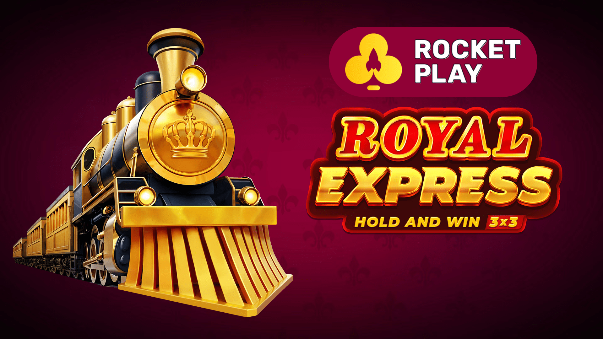
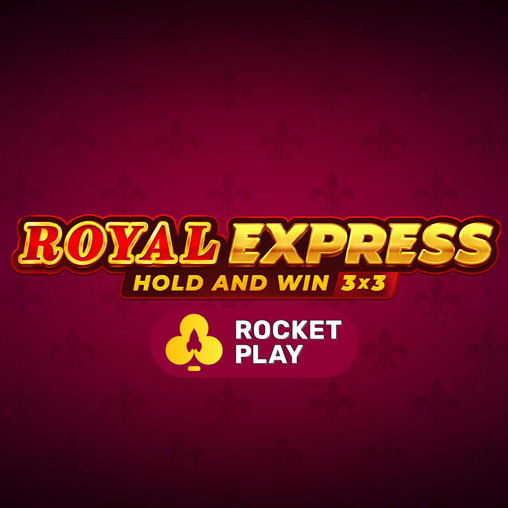
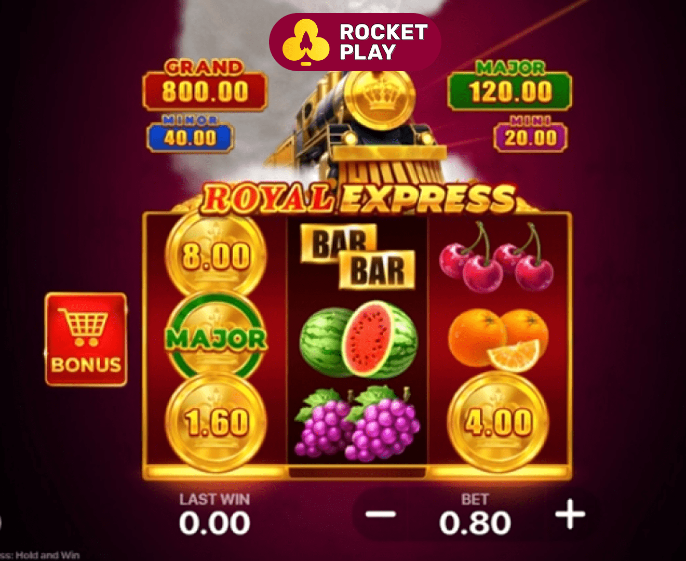
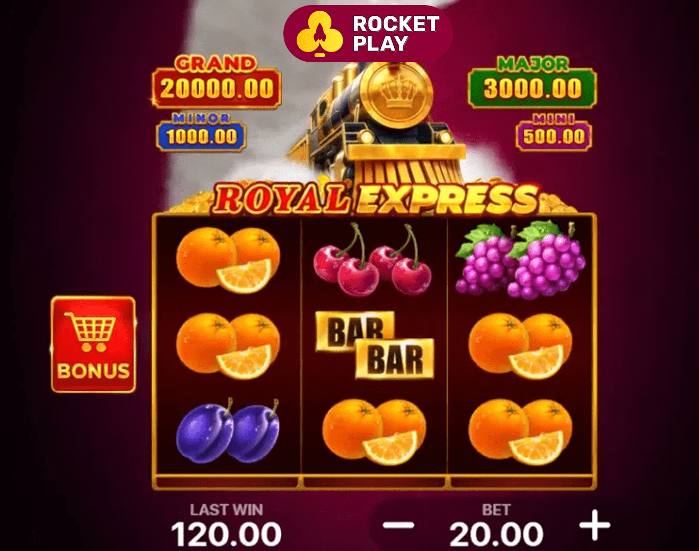

The Royal Express: Hold and Win demo is not a stripped-down version of the game; it is the full, feature-rich experience, offered completely free of charge. It's a 5-reel, 3-row video slot with 20 fixed paylines, set against the backdrop of a glamorous, old-world steam train. The theme is executed with perfection, from the elegant passenger symbols to the sophisticated jazz-and-steam soundtrack that creates an immersive atmosphere of luxury and adventure.
Royal Express: Hold and Win Demo: Your Free Ticket to Master the Game!
All aboard for a luxurious journey back to the golden age of rail travel, where opulence, mystery, and massive jackpots await at every stop—and you can experience it all without spending a single cent! Welcome to your definitive guide to the Royal Express: Hold and Win demo, a magnificent creation from the innovative developers at Playson. This exceptional game has captivated players worldwide by masterfully blending a sophisticated, vintage theme with the proven, heart-pounding excitement of the Hold and Win jackpot mechanic.
Detailed Info about the Royal Express Slot Demo

The core appeal of the Royal Express slot demo is that it allows you to experience its two main bonus features without any financial risk. You can trigger the Express Respins (Hold and Win) feature to chase the four fixed jackpots, and you can land the Free Spins round to see how the powerful symbol-removal mechanic works. It’s the perfect training ground to learn the game's high volatility and develop a strategy before you ever consider playing for real money.
|
Game Specification |
Details for Royal Express: Hold and Win |
|
Game Title |
Royal Express: Hold and Win |
|
Provider |
Playson |
|
Reels/Rows |
5x3 |
|
Paylines |
20 (Fixed) |
|
RTP (Return to Player) |
95.73% |
|
Volatility / Variance |
High |
|
Maximum Win |
5,000x the total stake (Grand Jackpot) |
|
Bonus Features |
Express Respins (Hold and Win), Free Spins with Symbol Removal, 4 Fixed Jackpots |
|
Betting Range (Demo) |
Typically $0.20 - $100 in virtual credits |
|
Demo Availability |
Yes, widely available at Playson casinos |
Game Integrity and Fairness in the Demo
A common concern for new players is whether the demo version plays differently from the real money game. You can play the Royal Express: Hold and Win demo with complete confidence, knowing that its outcomes are governed by the exact same certified Random Number Generator (RNG) as the real money version.
An RNG is a complex algorithm that ensures every spin is independent and its outcome is completely random. Reputable developers like Playson have their RNGs audited and certified by independent testing labs. This means the casino cannot alter the game's performance. The hit frequency, bonus triggers, and payout percentages you experience in the Royal Express slot demo are a true and accurate representation of how the real game performs over the long term. This fairness is fundamental to building trust and allowing players to practice in a realistic environment.
Player Reviews of the Royal Express Slot
Player feedback on the Royal Express: Hold and Win slot has been overwhelmingly positive, with many players highlighting the same key aspects:
- Liam, Canada:"I love the theme of the Royal Express slot. It feels so classy. I always start with the demo version at my favorite casino to warm up and get a feel for the volatility before I switch to real money. The high volatility is a thrill!"
- Chloe, New Zealand:"The Express Respins feature is what keeps me coming back. I practiced on the
- Marco, Italy:"Playing the Royal Express: Hold and Win demo is a great way to enjoy the game without risk. The free spins with only high-paying symbols is a fantastic feature. You can really see its potential in the demo. A top-quality slot."
Core Features to Explore in the Demo
The demo is the perfect place to get hands-on experience with the game's two main bonus rounds.
- The Express Respins (Hold and Win Feature): This is the game's main jackpot feature, triggered by landing 6 or more Golden Train Bonus symbols. In the demo, your goal should be to trigger this feature multiple times to understand its rhythm. Watch how the respins reset and see how frequently the Mini, Minor, and Major jackpot symbols land. This will give you a realistic expectation for a real money session.
Free Spins with Symbol Removal: This feature is triggered by landing three Gold Safe Scatter symbols on reels 1, 3, and 5. When you play the Royal Express: Hold and Win demo, pay close attention to what happens during these 8 free spins. With all low-paying symbols removed, the reels become packed with high-value symbols. Notice how much easier it is to land big five-of-a-kind wins and how the frequency of triggering the Express Respins feature increases from within the free spins. This is often where the largest non-jackpot wins occur.
Casino Bonuses: The Next Step After the Demo
Once you have mastered the Royal Express slot demo and feel comfortable with its mechanics and high volatility, you might consider playing for real money. One of a major advantages of making this switch is gaining access to casino bonuses. While you can't use these on the demo, they provide significant value for real play.

Most top online casinos offer a Welcome Bonus for new players. This typically comes in the form of a deposit match, where the casino matches a percentage of your first deposit with bonus funds. For example, a 100% match bonus on a $100 deposit would give you an extra $100 in bonus cash, starting you with a $200 bankroll. This extra money is perfect for a high-volatility game like Royal Express, as it gives you more spins and a better chance to weather the dry spells while you hunt for a big bonus feature.
Other common promotions to look out for include:
- Reload Bonuses: Get a bonus on subsequent deposits.
- Free Spins: Receive a set number of free spins on a featured slot.
- Loyalty/VIP Programs: Earn points for every real money wager, which can be exchanged for more bonus cash or other perks.
These offers are the key difference between playing the Royal Express: Hold and Win demo and playing for real, as they add tangible value to your deposits.
How to Start Playing the Royal Express Slot Demo
Getting started with the Royal Express: Hold and Win demo is incredibly simple and designed to be accessible to everyone. Unlike real money play, it doesn't require any commitments.

Finding and Launching the Demo (No Registration Needed)
The best part about demo play is its simplicity. You don't need to register an account or provide any personal details.
- Choose a Reputable Casino: Visit a top-rated online casino that features Playson games, such as SpinCasino, RocketPlay, or WinSpirit.
- Navigate to the Game Lobby: Go to the "Slots" or "Casino" section of the site.
- Search for the Game: Use the search bar and type in "Royal Express".
- Select Demo Mode: Hover your mouse over the game's icon. You will typically see two options: one for real money play and another labeled "Demo," "Play for Fun," or "Try Game." Click the demo option.
- Play Instantly: The Royal Express slot demo will launch directly in your browser, pre-loaded with a large balance of virtual credits. You can now play for as long as you like. If you run out of virtual credits, simply refresh the page, and the balance will reset.
Making the Switch: Depositing for Real Money Play
After you've spent enough time with the demo and feel ready for the real thing, the process is straightforward.
- Register an Account: Go back to the casino's homepage and complete the registration process.
- Verify Your Account: Follow the casino's instructions to verify your identity (a standard security procedure).
- Make a Deposit: Go to the cashier, choose a payment method, enter your deposit amount, and claim your welcome bonus.
Your First Real Money Game
Once your account is funded, launching the real money version of the Royal Express: Hold and Win slot is the same as launching the demo—except this time, you click the "Play" button. Remember to apply the bankroll management strategies you practiced in the demo, starting with a bet size that is appropriate for your real money balance.
Why You Should Try the Royal Express: Hold and Win Demo
The Royal Express: Hold and Win demo is not just a feature; it's an essential strategic tool. For a game with high volatility, understanding its behaviour is key to an enjoyable and potentially successful gaming session.
Playing the demo allows you to:
- Understand High Volatility Risk-Free: High volatility means you can have longer periods without significant wins. Experiencing this with virtual credits helps you prepare mentally and financially for a real money session, so you won't be surprised or frustrated by the natural swings of the game.
- Master the Bonus Features: You can spin the reels hundreds of times in the demo to see exactly how the Express Respins and Free Spins rounds work. You'll learn what it feels like to chase those last few Train symbols or to see the reels fill with high-paying symbols during free spins.
- Develop Patience and Discipline: The demo is the perfect place to practice good gambling habits. You can practice setting a virtual budget, sticking to a betting strategy, and "walking away" after a big virtual win or when your virtual balance is depleted.
Simply Enjoy the Game: The Royal Express slot is a beautifully designed game with a wonderful theme and soundtrack. The demo allows you to enjoy all of this artistry without any pressure.
Mobile Demo Gaming: Playing on Android & iOS
Playson has designed the Royal Express: Hold and Win slot using HTML5 technology, which means the demo version is perfectly accessible and playable on all modern mobile devices.

Android Experience
If you have an Android smartphone or tablet, you can access the Royal Express slot demo directly through your mobile browser (like Google Chrome). Simply navigate to your chosen casino's website, find the game, and tap "Demo." The game will automatically optimize for your screen size, with touch-friendly controls and no loss of graphical quality or features.
iOS Experience
The experience is identical for iPhone and iPad users. Open Safari, go to the casino's website, and launch the demo from the game lobby. The performance is smooth, and the gameplay is intuitive. For even quicker access, you can use the "Add to Home Screen" feature in Safari to create a web-app icon for the casino right on your home screen.
Royal Express: Hold and Win Predictor & App Hack Warning
When you search for popular slots online, you might come across websites or videos promoting "predictor" tools or "hack apps" that claim to be able to manipulate the game's outcome or tell you when a big win is coming.
It is critically important to understand that these tools are all scams. The Royal Express: Hold and Win slot operates on a highly complex and secure Random Number Generator (RNG) that is certified and audited by third parties. Its outcomes are truly random and cannot be predicted or influenced by any external software. These "hack" apps are designed to either steal your personal information, infect your device with malware, or trick you into paying for a useless service. Do not download or pay for any such tools. The only way to succeed is through luck and smart play at a legitimate casino.
Payment Methods for Real Money Play
When you decide to move on from the Royal Express: Hold and Win demo, you'll need to deposit funds. Top casinos offer a variety of secure and convenient payment methods.
Common Deposit Options
- Credit/Debit Cards: Visa, Mastercard
- E-Wallets: Skrill, Neteller, MuchBetter, ecoPayz
- Bank Transfers: iDebit, Trustly, Interac (very popular in Canada)
- Prepaid Vouchers: Paysafecard
- Cryptocurrencies: Bitcoin, Ethereum, Litecoin (at crypto-friendly casinos like RocketPlay)
Deposits are almost always instant and free of charge.
Common Withdrawal Options
- E-Wallets & Crypto: Typically the fastest methods, often processed within 24 hours.
- Bank Transfers/Card Withdrawals: May take 2-7 business days depending on the bank and casino processing times.
Always play at a casino known for reliable and timely payouts.
Casino Support
A key part of a good casino experience, even when just playing demos, is knowing that help is available. Reputable casinos offer professional customer support, usually through:
- 24/7 Live Chat: For instant assistance with any query.
- Email Support: For less urgent or more detailed questions.
FAQ/Help Centre: A comprehensive section with answers to common questions.
Responsible Gaming
Responsible gaming habits start with the demo. The Royal Express: Hold and Win demo is the perfect place to practice playing for fun and within limits. When you switch to real money, remember these principles:
- Gamble for Entertainment, Not as a Job: Treat it as a fun pastime.
- Set Budgets: Only gamble with money you can afford to lose.
- Set Time Limits: Don't let gambling interfere with other aspects of your life.
Use Casino Tools: Utilize deposit limits, loss limits, and self-exclusion tools if you need them.